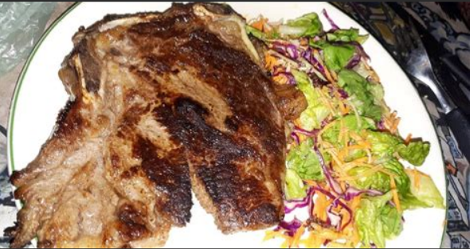

RUDA - Recetas saludables
Recetas
|
Recetas veganas
|
Recetas dulces
|
Tips
|
Contacto
Recetas
Sopa de zapallo a la crema
Zapallo
cebolla
Tomate
Queso rallado
Sal y aceite a gusto
Churrasco con ensalada

Bife de chorizo
Lechuga
Tomate
Cebolla
Sal y aceite a gusto
Volver